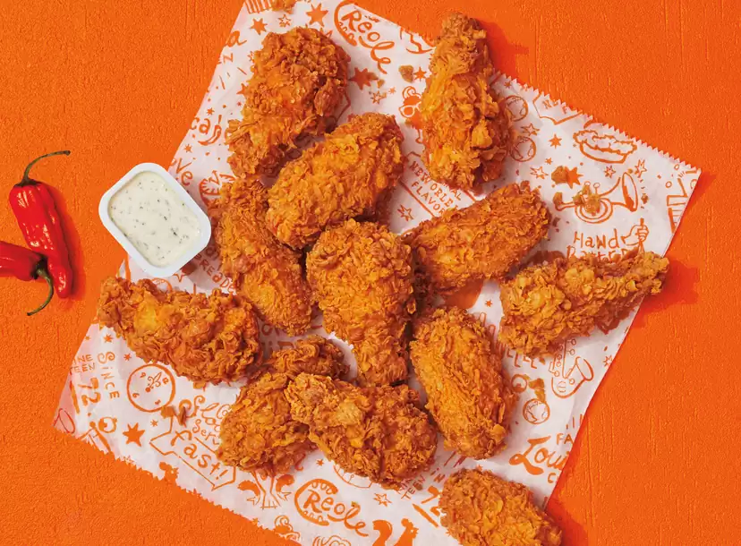

Ghost Pepper wings

Description
This Ghost Pepper Wings recipe should not be underestimated!
Ingredients
- 8 lbs of Chicken Wing Sections
- Blue Cheese or other dip
Dredge #1
- Kosmo's Q Ghost Pepper Wing Dust
Dredge #2
- 12 oz Club Soda
- 3 Eggs
- 1 Tbsp Kosmo's Q SPG Rub
- 1 Cup Flour
Dredge #3
- 3 Cups Flour
- 1 Tbsp Kosmo's Q SPG Rub
- ½ tsp Thyme
- ½ tsp Ginger
- 1 tsp White Pepper
- 1 tsp Black Pepper
- ½ Tbsp Onion Powder
- 1 tsp Garlic Powder
- 1 Tbsp Paprika
Stepts
- For this recipe, you'll need to dredge the chicken wings in three layers. The first is a dry dredge: just dump enough Kosmo's Ghost Pepper wing dust in a bowl - save 1-2 tablespoons for later.
In a second bowl, combine the ingredients for dredge no.2 (listed above). You might notice we used club soda instead of water - that's the secret ingredient, and you're gonna be thanking us later for it. Finally, the third and final dredge (or as Kosmo likes to call it, "a barrage of brilliance"). This is where you will combine all the spices that will make your chicken wings unique - feel free to add and adjust these to your preference.
- Now this is a super fast recipe - to make it even faster, fire up your fryer, and let it heat up while you coat the wings in all 3 dredges.All that's left is carefully lowering the breaded chicken wings in the hot grease, and watching them go. Your target internal temperature is 165ºF (74ºC). An instant-read digital thermometer is a must!
- Your hot chicken wings are good to go! Pull them from the fryer and place on a paper towel-lined pan to absorb the excess oil, then serve alongside your favorite dip while they are still hot.